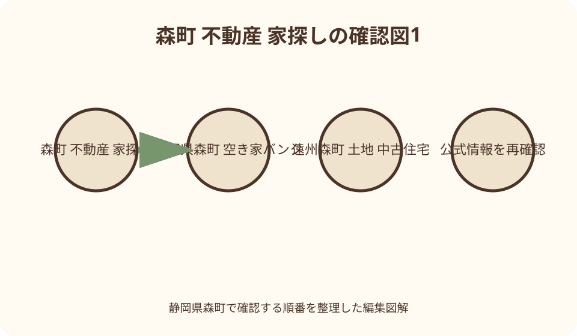
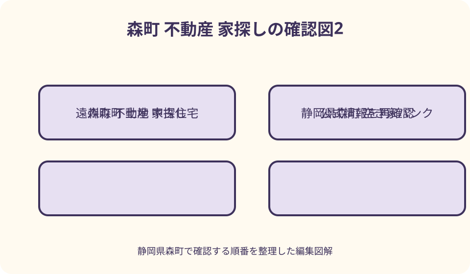

森町の住まい・不動産｜最終確認 2026-08-10
静岡県森町の不動産・家探しの入口｜賃貸・売買・空き家・土地を分けて確認
静岡県森町で不動産を探す時は、検索結果に出た家を価格順に並べる前に、賃貸、一般の売買、町の空き家・空き地バンク、土地、中古住宅を別の入口として整理します。森町は町なか、一宮、園田、飯田、天方、三倉などで、通勤・通学、買い物、公共交通、道路、上下水道の条件が同じではありません。本記事は特定物件や業者を推奨せず、暮らす範囲を決め、道路と境界、設備、災害情報、登記、契約書類の順で確認するためのINDEXです。表示価格を将来の価値や総費用と同一視せず、現地、公的資料、資格を持つ専門家の説明を突き合わせます。

編集イラスト家探しは五つの入口を混ぜない
賃貸住宅は使用条件と月々の支払いを契約で定める選択です。所有権を取得する売買とは、修繕、改装、退去、保険の確認事項が異なります。
一般の売買物件は、不動産事業者が扱う新築、中古住宅、土地などを含みます。広告に掲載された面積や用途だけで、希望の建築や改修ができるとは判断しません。
森町の空き家・空き地バンクは、所有者から登録された情報を利用希望者へ結ぶ制度です。一般市場に出る全物件の一覧でも、町による品質検査でもありません。
土地は建物がない分だけ簡単なのではありません。接道、境界、地目、造成、給排水、建築上の条件を、建物付き物件とは別に確かめます。
中古住宅は土地と建物を二層で見る
中古住宅では、土地の権利・境界・道路と、建物の構造・劣化・設備を分けて調べます。室内がきれいでも、土地側の確認は省けません。
登記上の床面積、現況の間取り、増築部分、付属建物が一致するかは資料をそろえて尋ねます。相違がある時の扱いを自分だけで結論づけません。
雨漏り、白蟻、傾き、給排水、屋根、外壁、電気容量、耐震性は、告知と目視だけで判断できないことがあります。調査範囲を書面で確認します。
改修費は建物状態、工法、資材、工期で変わります。購入価格へ一律の金額を足す計算ではなく、現地を見た事業者の見積条件を比較します。
空き家・空き地バンクの役割を正しく読む
森町公式は、バンク登録情報を賃貸物件と売却物件に分けて掲載しています。売却希望と賃貸希望を、同じ交渉条件だと読み替えません。
町の案内では、交渉や契約は当事者間または協力する不動産事業者を通じて進めます。町が契約責任を負う窓口だと誤解しないことが重要です。
登録後に交渉中、成約、取下げとなる場合があります。掲載を見た時点で利用可能と決めず、物件番号を示して最新状態を問い合わせます。
所有者が土地と建物で異なる場合や、相続整理が必要な場合も想定します。登録情報を起点に、権利関係と契約当事者を再確認します。

第一段階は物件でなく生活圏を選ぶ
家探しの地図には、勤務先、学校、保育、医療、日常の買い物、金融機関、家族の支援先を置きます。観光地までの近さだけでは決めません。
町なかと山間部では、同じ距離でも道路幅、勾配、夜間の明るさ、雨天時の移動負担が変わります。朝夕と雨の日を想定して経路を見ます。
自家用車が一台使えない日、家族が別方向へ動く日も描きます。鉄道、バス、タクシー、徒歩、自転車を代案として現実に使えるか確認します。
通勤時間は地図アプリの一回の表示を保証値にしません。曜日、時間帯、工事、学校行事、季節の観光混雑を変えて検討します。
家族の平日を一人ずつ時系列にする
午前七時から夜まで、家族それぞれの出発、送迎、帰宅、買い物を一枚にします。車の使用が重なる時間が、住む場所の弱点を示します。
子どもの進学や親の通院など、数年後に変わる行き先も二案だけ置きます。遠い将来を当てるのではなく、変化しても選択肢が残るかを見ます。
在宅勤務では通信回線の提供区域、携帯電波、停電時の代替場所を契約前に確認します。住所だけで通信品質を断定しません。
ごみの収集、自治会、地域行事、共同管理の有無は生活費と時間に関わります。売主や貸主だけでなく、町の担当案内も参照します。
道路は幅だけでなく権利と管理を確かめる
現地では敷地へ接する道の位置、幅、側溝、見通し、勾配、車の転回を見ます。大型車や緊急車両が通る条件も必要に応じて尋ねます。
見た目が道路でも、公道、私道、通路、敷地の一部など扱いは同じではありません。道路種別や接道の判断は、担当窓口と専門家へ資料を示して確認します。
私道では持分、通行、掘削、補修負担が問題になることがあります。口頭の『昔から使っている』だけでなく、契約・登記・関係者の確認へ進みます。
建築や再建築の可否は個別条件で決まります。本記事や広告文から法的な結論を出さず、計画図を用意して森町の都市計画・建築関係窓口へ相談します。

境界は杭の有無だけで終わらせない
境界標が見えても、それが対象地の全境界を示すとは限りません。公図、地積測量図、現況図、売買対象範囲を照合します。
塀、擁壁、樹木、屋根、排水管が境界付近にある場合、所有と維持の認識を確認します。写真には撮影位置と方向を付けます。
隣接所有者との境界確認、測量の要否、費用負担、引渡し条件は契約前に整理します。土地家屋調査士へ相談すべき範囲を仲介者にも尋ねます。
面積差や越境が疑われても、その場で違法・適法と断定しません。資料、現地、当事者の説明をそろえ、必要な専門職へ判断材料を渡します。
登記で所有者と担保を確認する
登記事項証明書では、土地と建物を別々に確認します。所在地、地番、地目、地積、家屋番号、所有者、抵当権などの記載を読みます。
住居表示と地番は同じとは限りません。広告住所だけで請求せず、対象不動産を特定できる資料を仲介者や法務局案内で確かめます。
相続登記が未了、共有者がいる、売主名と登記名義が異なるなどの状況では、契約できる人と手続の順を司法書士等へ相談します。
オンラインで取得した図面や証明書も、取得日と対象を保存します。古い資料だけで現在の権利状態を保証されたと考えません。
上水道・井戸・引込管を分ける
水については、上水道、簡易な給水施設、井戸など水源を確認します。蛇口から出るという事実だけで、権利や維持方法まで分かるわけではありません。
上水道なら本管、引込位置、口径、メーター、名義、加入や工事の費用条件を森町上下水道課と施工事業者へ尋ねます。
井戸等なら水量、水質検査、ポンプ、電源、凍結・渇水時の扱い、修繕責任を確認します。飲用可否を見た目や売主の経験談で決めません。
土地だけを買う場合、道路から敷地までの引込工事や道路掘削が必要になることがあります。建物見積とは別の項目として調査します。
下水道・浄化槽・排水先を区別する
森町には公共下水道の供用区域があり、町公式で区域と接続案内を確認できます。町内全域が同じ方式だとは考えません。
公共下水道へ接続済みか、敷地前まで整備済みか、将来計画のみかは別です。受益者負担、工事、使用料の条件を住所ごとに問い合わせます。
浄化槽なら種類、容量、設置位置、放流先、保守点検、清掃、法定検査の記録を確認します。設置されているだけで正常と判断しません。
台所、浴室、トイレ、雨水の流れを図にします。排水管が隣地を通る可能性や共同利用がある場合は、権利と修繕負担を専門家へ相談します。
災害情報は一枚の地図で決めない
候補地は洪水、土砂災害、地震、ため池など、森町が案内する複数の防災資料で確認します。色がないことを危険ゼロの保証にしません。
地図の縮尺、作成時点、想定条件を読み、敷地と進入路の両方を見ます。自宅が区域外でも、避難経路や橋が区域内という場合があります。
大雨の後は側溝、擁壁、斜面、水の跡、道路冠水の兆候を安全な範囲で見ます。危険な天候時に現地確認を強行しません。
指定避難所までの距離だけでなく、夜間、停電、子連れ、高齢者同伴で移動できる経路を二つ考えます。最新の開設情報は災害時に再確認します。
都市計画と土地利用は計画を示して聞く
用途地域、都市計画区域、建ぺい率、容積率などは、土地の場所と計画内容をそろえて森町公式資料・窓口で確認します。
農地、山林、造成地では、売買や転用、開発、伐採など別の手続が関わることがあります。地目だけで必要手続を決めません。
店舗併用、民泊、事務所、車庫、太陽光設備など住居以外の希望があれば、最初の相談で伝えます。住宅購入後に追加できるとは限りません。
古家を解体して建て直す案は、解体、接道、上下水道、擁壁、地盤、廃棄物まで含めます。更地価格との単純比較を避けます。
建物調査は検査範囲を先に決める
建物状況調査を依頼する場合、床下、屋根裏、屋根、設備、耐震、附属建物のどこまで見るかを契約前に確認します。
調査は見える範囲と時点に限界があります。検査済みという言葉を、今後一切の故障がない保証へ置き換えません。
修繕履歴、確認済証、検査済証、設計図、設備説明書、保証書、保険、罹災・漏水履歴など、残っている資料の一覧を作ります。
家具や荷物が多い空き家では、見えない部分を未確認として記録します。引渡し前の残置物処理と再確認の時期も書面にします。
総費用は取得後の一年まで並べる
売買代金や家賃以外に、仲介、登記、税、保険、保証、融資、測量、解体、引越し、修繕、設備更新が考えられます。
土地では造成、地盤、上下水道引込、外構、擁壁、電気・通信が増える場合があります。中古住宅では緊急修繕の予備費も分けます。
金額は物件と契約時点で変わるため、本記事では相場や値上がりを示しません。見積には対象、数量、除外、期限、追加条件を付けてもらいます。
住宅ローンの借入可能額と、無理なく払い続けられる額は同じではありません。税、修繕、車、教育、通院を家計表へ戻します。
賃貸では退去まで先に読む
賃貸の候補は、契約期間、更新、解約予告、原状回復、修繕分担、駐車場、ペット、楽器、事業利用の条件を読みます。
空き家を借りる場合、入居者が改修できる範囲、費用負担、退去時の扱いを図面付きで合意します。口頭の自由改装だけに頼りません。
庭木、草刈り、側溝、浄化槽、井戸、自治会費など、共同住宅では目立たない管理項目が戸建て賃貸にはあります。
短期間借りて地域を確かめる方法もありますが、希望地域に常に賃貸在庫があるとは限りません。時期と範囲を広げる代案を持ちます。
契約前に説明資料を一冊へまとめる
物件概要、登記、図面、重要事項説明書案、契約書案、告知書、設備表、見積、ローン条件を物件番号ごとのフォルダーへ保存します。
重要事項説明は当日に初めて聞く場にせず、可能なら事前に案を受け取り、疑問へ番号を付けます。回答も口頭だけで終わらせません。
手付金、解除、ローン利用、引渡し、境界明示、残置物、契約不適合に関する条項は、期限と行動を家族で復唱します。
分からない条項へその場で署名せず、説明者の資格と立場を確認します。法的な結論が必要なら、契約前に適切な専門家へ相談します。
相談先は疑問の種類で振り分ける
空き家バンクの登録・利用手続は森町の担当窓口、上下水道は町の担当課、都市計画や道路は各所管へ、住所と資料を示して聞きます。
登記記録や証明書の取得案内は法務局を参照します。登記申請や権利整理は司法書士、境界や表示登記は土地家屋調査士へ相談する場面があります。
建物状態や改修は建築士・施工事業者、融資は金融機関、税は税理士や税務窓口、紛争や契約判断は弁護士等が候補です。
県の宅地建物取引に関する相談窓口は、仲介取引の相談入口になります。個人間取引や賃貸管理など対象外の内容もあるため、相談範囲を先に確認します。
図解1：候補を絞る前の三層確認
一層目は生活です。通勤、通学、医療、買い物、家族の車、公共交通を地図へ置き、暮らせる地区を絞ります。
二層目は土地です。道路、境界、登記、災害、上下水道、土地利用を調べ、希望する使い方と矛盾しないか確かめます。
三層目は建物と契約です。劣化、修繕、設備、費用、説明書、解除条件を確認し、疑問を専門家へ割り振ります。
三層を逆順にすると、気に入った内装へ生活上の不便や土地の条件を合わせることになります。順序自体を判断道具にします。
図解2：一物件一枚の確認票を作る
左列に事実、中央に未確認、右列に確認先を置きます。『日当たり良好』のような広告表現は事実欄へそのまま転記しません。
道路なら種別、幅、持分、通行、掘削、側溝を分けます。境界なら標識、図面、測量、隣接確認、越境の欄を分けます。
水回りは水源、引込、排水方式、維持記録を記します。災害欄は地図名、確認日、想定、避難路まで残します。
回答を受けたら資料名、発行者、日付を追記します。『たぶん』『問題なし』という回答は、根拠資料が未確認であることを残します。
良い点：選択肢を分ければ比較の軸が見える
森町では町なかの利便、鉄道沿線、一宮方面、山間部の自然など、異なる暮らし方を検討できます。地区の違いを欠点だけで捉える必要はありません。
空き家・空き地バンクという公的な情報入口があり、賃貸と売却を分けて確認できます。一般流通と併せて探索範囲を整理できます。
上下水道、都市計画、防災など町公式の資料が用意され、物件広告とは別の視点を得られます。確認日を記録すれば相談もしやすくなります。
土地・建物・契約を三層に分けると、家族間の希望も具体化します。内装の好みと、毎日の移動や維持負担を同じ表で争わせずに済みます。
注文したい点：情報がない部分を問題なしにしない
掲載写真が少ない、図面が古い、修繕履歴がない場合、それは不具合の証明でも安全の証明でもありません。未確認として残します。
山間部の広い土地や古い家は魅力がありますが、草木、斜面、私道、水源、浄化槽、附属建物の管理を切り離せません。
空き家バンク登録という公的な言葉から、町が価格、境界、建物状態、近隣関係を保証すると受け取らないようにします。
契約を急ぐ理由が提示された時ほど、期限、失う条件、未確認事項を一覧にします。判断を保留することも選択肢として扱います。
代案・結論：買わない段階にも価値がある
地区を決めきれないなら、まず賃貸や短期滞在で生活動線を確かめます。希望地域に物件がなければ隣接地区も比較します。
中古住宅の改修リスクが大きければ、土地から建築する案だけでなく、状態の異なる別物件、共同住宅、周辺市からの通勤も比べます。
親族の空き家を引き継ぐ場合も、すぐ売る・住むの二択にしません。登記、荷物、保険、換気、草木、税の現状を実家カルテとして整理します。
結論は、生活圏を選び、土地、建物、契約を順に確認できる候補だけを残すことです。相場や将来価値を断定する記事には判断を預けません。
大石の視点：現地で家より先に外周を見る
小さな不動産実務の目線では、内覧へ着いたら建物へ急がず、進入路、側溝、境界標、擁壁、水の流れ、電柱、隣接地から見ます。
次に登記と現況の違いを一項目ずつ拾います。違いを見つけたこと自体を欠陥と決めず、誰がどの資料で説明するかを決めます。
家族には良い写真だけでなく、未確認票と維持作業も共有します。契約者一人が理解していても、暮らす人の納得がなければ判断は安定しません。
売却未定の実家でも同じです。道路、境界、登記、設備、連絡先を一枚へ集めると、修繕、賃貸、利用、売却のどの道にも進みやすくなります。
まとめ：物件一覧を確認工程へ変える
森町の家探しは、賃貸、売買、空き家バンク、土地、中古住宅を分けるところから始まります。入口が違えば質問も契約も違います。
候補地は生活圏、道路、境界、登記、上下水道、災害、建物、費用の順に確認し、資料がない事項を未確認として管理します。
町、県、法務局の情報は強い出発点ですが、個別物件の保証書ではありません。最新日と対象範囲を読み、現地と専門家の説明を重ねます。
一件を急いで決めるより、同じ確認票で二件を比べます。暮らしの現実と契約条件を両方説明できる物件が、次の検討へ進む候補です。
公式情報・確認先
掲載内容は次の一次情報を基礎に整理しました。営業、料金、催し、交通は変わるため、出発前または手続き前にリンク先で最新情報を確認してください。
- 森町空き家・空き地バンク（静岡県森町、2026-08-10確認）
- 森町空き家・空き地バンク物件情報（静岡県森町、2026-08-10確認）
- 森町公共下水道の供用区域（静岡県森町、2026-08-10確認）
- 森町浄化槽案内（静岡県森町、2026-08-10確認）
- 森町都市計画情報（静岡県森町、2026-08-10確認）
- 森町地域防災計画（静岡県森町、2026-08-10確認）
- 静岡地方法務局不動産登記管轄案内（houmukyoku.moj.go.jp、2026-08-10確認）
- 静岡県宅地建物取引相談（www.pref.shizuoka.jp、2026-08-10確認）